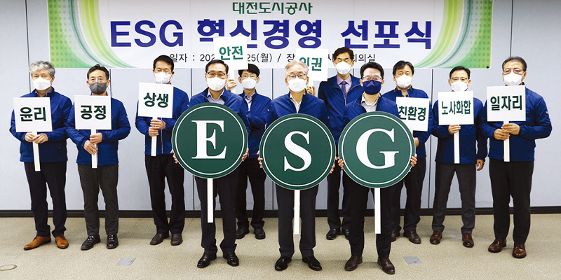

ESG경영에 대한 접근
2019년 발생하여 2020년 전 세계로 확산된 코로나19에 따라 사회적으로 ‘포스트 코로나 대비’, ‘뉴노멀’이라는 용어가 유행하기 시작했으며 이 감염증의 확산을 방지하기 위해 시행된 사회적 거리 두기 등의 강력한 방역 조치에 따른 전반적인 변화가 있었고 급격히 변해가는 일상에 적응하기 어려운 시기에 국내 대기업 경영자가 2020년 하반기부터 전 계열사에 중장기 사업전략을 담은 ‘파이낸셜 스토리(기존 사업 틀에서 벗어나 탄소중립 실현을 앞당길 수 있는 사업모델 수립)’를 경영비전으로 강조하며 ‘ESG경영’을 화두로 제시하였다.
ESG경영의 개념을 들여다 본 결과, 대전도시공사의 모태사업인 환경사업과 에너지 전환에 따른 수소사업을 새롭게 시행하고 있으므로 적합한 것으로 생각되어 2020년 11월에 다음연도 사업계획 중 ESG경영계획을 반영하였고, 보다 전문적인 컨설팅을 위해 ISO26000 진단 및 사회적 가치 전략을 수립하였다.
지방공기업평가원에서도 ESG경영, 4차 산업혁명에 관해 지방공기업 임직원을 대상으로 교육을 시행해 개념에 대한 내재화와 새로운 용어에 대해 공감하는 과정이 더욱 용이하였다.

ESG혁신경영 추진전략 수립 및 실행
Environment(환경) 분야
수소경제 신사업 분야 개척 : 정부의 수소경제로드맵에 따라 탄소중립에 부응하고자 대전에 수소충천소 3개소를 설치하였고, 유통비용을 고려하여 자체 수소생산시설을 구축함으로써 상호 순환구조를 만들어 중부권 수소경제의 메카로서 역할을 하고 있다.
혁신성장 인프라 구축으로 과학도시 위상 제고 : 자체 혁신기술 경진대회를 개최하여 드론, 메타버스, 사물인터넷 등 첨단기술을 활용한 30건의 혁신기술을 창출하였고 공사의 사업에 적용하여 도시개발·주택사업 추진 시 드론을 활용한 공정 및 품질관리, 입주예정자 안내에 활용하는 한편, 코로나19 팬데믹 상황에서 메타버스를 활용한 모델하우스 적용으로 코로나19 확산을 방지함으로써 시민 중심의 경영을 실천하고 있다.
대전오월드 → 디지털랜드로 변신 : 2002년에 개장하여 20여 년간 2,000만 명이 방문한 대전오월드는 세월이 경과되면서 입장객이 감소하는 추세였으며 코로나19로 인해 영업손실이 더해지는 상황이었다. 4차 산업혁명을 맞이하여 대전오월드의 재도약을 위해 첨단 디지털미디어 기술을 활용한 미디어아트 콘텐츠를 조성하고 있으며 2022년 7월 디지털랜드 개장 시 ‘연중무휴, 야간개장’을 통해 시민에게 사랑받는 레저휴식공간으로 변모할 계획이다. 이와 함께 KT와 협력하여 MEC 기반의 5G 융합서비스를 통해 ‘미아찾기, VR사파리 체험’ 등 서비스를 제공하고 있다.
Social(사회) 분야
대전형 일자리 창출, 살아나는 지역경제 : 청년과 노인일자리 부족으로 어려움을 겪는 시민들을 위해 수소사업 등 신사업을 발굴하고, 대전형 공공일자리 공모사업에 당선되어 양질의 정규직 일자리 98명을 포함한 총 198명의 일자리를 창출하였으며, 한국노인인력개발원과 시니어 인턴십협약을 체결하여 월 급여의 50%를 지원받아 시니어 일자리를 확대하고 있다. 이러한 노력이 대전형 일자리 지속 창출로 이어져 지역경제 활성화에 기여할 것으로 기대하고 있다.
지역 및 기업과 함께하는 동반성장 : 코로나19로 인해 어려움을 겪는 소상공인과 청년창업기업을 위해 IBK기업은행과 협약을 통해 200억 원의 재원을 마련하여 대출을 지원하고 최대 2.46%에 이르는 이자를 감면하여 그간 80건의 대출이 진행되었고 최근에는 ESG경영기업을 대상에 추가하여 보다 많은 기업이 혜택을 볼 수 있도록 하고 있다.
취약계층을 위한 공공구매 및 혁신계약 제도화 : 현행 법률에서는 사회적 경제기업, 중증장애인 생산품, 녹색제품, 혁신제품 구매를 촉진하도록 하면서도 별도의 제재규정이 없어 현장에서는 경제성 중심으로 구매를 하는 상황에서 공사 내부규정을 제정하여 우선구매를 의무화함으로써 전년 대비 사회적기업제품 83.5%, 중증장애인생산품 244.6%, 녹색제품 34.3%, 혁신제품은 528.9%가 성장하여 사회적 배려를 요구하는 취약기업의 고용유지에 기여하였다.
Governance(투명경영) 분야
지역주민과 함께 코로나19 극복 : 지역의 산업구조는 78%가 서비스업으로서 코로나19로 인한 매출 감소가 이어져 지역경제의 어려움이 가중되는 상황에서 지역의 어려움 해소를 위해 공사이익금 62억 원을 배당하였고 금년 결산기에도 코로나19 극복을 위한 이익배당(70억 원)을 실행하였다. 지역상생 발전을 위해 온누리상품권 구입(369백만 원), 지역사랑상품권(3백만 원), 화훼농가 꽃을 구매(422백만 원)하는 한편, 착한 임대인사업을 통해 대전오월드 임대매장과 임대주택 상가 임대료를 감면(18억 원)함으로써 코로나19로 힘든 소상공인·자영업자에게 회생과 활력을 부여하는 데 노력하고 있다.
또한 코로나19 의료진에게 편의시설(리무진버스, 대형선풍기, 화장실)을 지원하고 부족한 혈액을 보충하기 위해 헌혈 어벤져스운동을 통해 126장의 헌혈기부를 하는 한편, 전 직원 모금을 통해 코로나19 성금(33백만 원)을 기부하는 노력을 전개한 결과 주거복지부문 국토교통부장관 표창, 대한민국주거복지문화대상, 과학기술정보방송통신위원회 위원장 표창을 수상한 바 있다.
주민의견을 반영한 그린리모델링 : 탄소중립화 실천사업의 일환으로 국토교통부가 주관하는 ‘노후 공공임대주택 그린리모델링 공모사업’에 당선되고 57억 원의 사업비를 교부받아 임대주택 3개 단지 150세대에 대한 그린리모델링을 완료하였다. 그린리모델링은 친환경자재 및 에너지 성능 개선에 중점을 두는 당일세대 그린리모델링과 소형평형 2세대를 통합하는 세대통합 그린리모델링으로 추진함으로써 임대주택 입주자의 삶의 질 향상에 한걸음 더 나아갔다.
지역사회 숙원사업 해결로 새로운 대전 만들기 : 시민의 숙원사업인 유성복합터미널 조성은 민자사업으로서 각종 암초를 만나 네 차례나 사업이 무산되어 10년 이상 표류된 사업이다. 공사는 더 이상 미룰 수 없다고 판단하여 민자사업 방식에서 ‘공영개발’ 방식으로 전환함으로써 약 3만 2,693㎡ 부지에 지하 3층 지상 33층의 규모로 통상적인 여객운송시설뿐만 아니라 지식산업센터, 공공업무시설 및 청년활동공간, 청년과 신혼부부를 위한 행복주택 등이 들어서는 다목적 복합 터미널로 설계하여 2026년도 완공을 목표로 하고 있다.
또한 1979년에 건립되어 낡고 협소한 유성시외버스 정류소를 대전시의 지원(20억 원)을 받아 지난해 이전을 완료함으로써 교통체증 해소와 시민생활 편의제고에 기여하였다. 대전에 부족한 랜드마크를 만들기 위해 대전시와 산림청이 공모한 ‘보문산 친환경 목조전망대 설치사업’에 참여하여 국비(65억 원)를 확보하여 시민공모결과 ‘보문산 큰나무 전망대’로 명명된 목조전망대를 2024년 상반기에 준공할 예정이다.